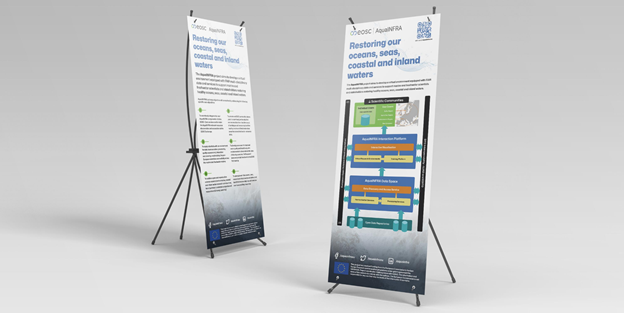

| Date | Task |
|---|---|
| November 4, 2024 - November 17, 2024 | Competition registration period |
| November 17, 2024 11:59PM | Registration closes |
| TBA | Pre-competition workshops |
| December 5, 2024 11:59PM | Deadline for the submission (case study abstract, poster, 10-minute video presentation) |
| December 29, 2024 3:00PM - 5:30PM at Cinnamon Lakeside Colombo | Poster Display and Evaluation at ISC 2024 |
Competition Guidelines
1. Participation and Team Formation Guidelines
1.1 The competition is open for undergraduates and recent graduates across all universities and Higher Education Institutes in Sri Lanka.
1.2 If the student is a recent graduate, the effective date of the degree should be after 01/01/2024.
1.3 The team must consist of 2 to 3 participants, with a minimum of 2 and a maximum of 3.
1.4 Team members may or may not be from the same university or higher education institution.
1.5 Teams can include only undergraduates, only recent graduates, or a mix of both.
2. Competition Task
2.1 There are two case studies available. Descriptions for Case Study 1 and Case Study 2 can be viewed by hovering over the respective tabs.
2.2 Upon registration, datasets for both case studies will be provided.
2.3 Each team needs to select one case study and conduct analysis to achieve its listed objectives.
2.4 Based on their analysis, each team should submit the following documents: 1) abstract, 2) digital copy of the poster, 3) 10-minutes video presentation, 4) printed copy of the poster
2.5 See sections 4-5 for abstract, poster and video presentation guidelines.
3. Important Dates
4. Abstract Guidelines
5. Poster Guidelines
5.1 Poster Dimensions:
The poster must adhere to the specified dimensions outlined by the committee as below.
- Poster must be portrait oriented.
- Dimensions: 5 ft x 2 ft (height x width).
- You will not be able to paste it or hang it to any of the walls or stands in the conference venue. Hence, your poster will be a standing poster. The stand will be provided by the conference organizers if required.

5.2 Design Considerations:
While there are no specific font sizes or types, ensure that text is legible from a distance. Use a balanced layout that allows for easy navigation through the content.
Utilize appropriate colors and graphics to enhance readability and visual appeal. Avoid overcrowding your poster; leave ample white space for a clean look.
Be mindful of color contrasts, ensuring that all text and visuals are easily distinguishable.
5.3 Poster contents:
Your poster should include the following sections:
Title: It is recommended to keep the title of the poster the same as in the submitted abstract. It should be prominently displayed at the top of the poster.
Author(s) and Affiliation(s): List all authors along with their respective institutions. Include the corresponding author’s email address for inquiries.
Introduction
Methods
Results
Discussion
Conclusions
Acknowledgements
References
Team name and Email addresses of all members